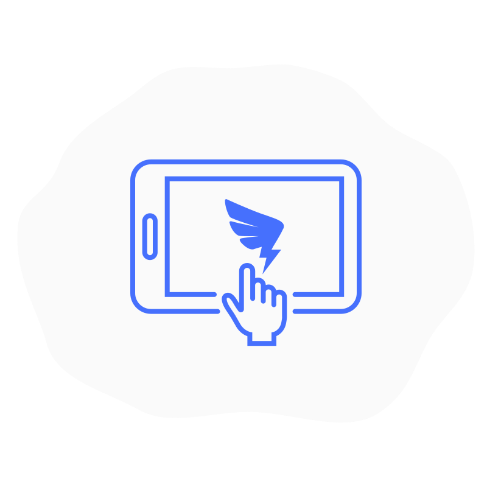

关于ARK Design
ARKDesign 不局限于视觉设计，以人为本，注重用户体验。
任何设计的服务对象是都是人，这就要求我们以人为中心来解决问题，将人们放在设计体验的中心，
同时要专注于总体目标，而不是说要解决的特定问题。
这就需要设计者以不同的方式看待问题、重新定义问题，从逻辑到视觉提供合适的解决方案。
设计流程
随着产品实践的巨大变化，我们已经不仅仅是单枪匹马的前行，而是由产品（app PM，Web PM，数据PM）、设
计（UE、UI）、技术（开发、测试）、运营（内容、推广、品牌、渠道）、有一些团队还会配备市场、商务、客服等其
他岗位， 共同组成的跨职能大型团队协同工作。所以在前期的产品设计的过程中，制定并准守一定的规范，可帮助团队
更好更快速的合作！
● 使其正式；
● 使其适应性强；
● 使其可维护；
● 使它平易近人；
● 使它与上下文无关；
● 使它与上下文相关；
首先分析产品的受众人群（行为、态度、资质、动力、技能），对比竞争产品，模拟用户动作脚本。帕累托原理告
诉我们，我们倾向于80％的时间使用20％的东西，这要求我们要专注于产品最重要的方面，可确保大多数访问者都能快
速找到所需的内容，提供更简单，干净和直接的用户体验，没有干扰，障碍和挫折感。使用分析来确定用户使用最多的
前20％的事情。确定研究结果的优先级，并将设计和开发资源集中在引起80％用户问题的20％问题上。
其次调研产品常用的终端设备 - 做好产品界面适配和设备可视化。这很重要，若设计中大量使用浅灰色的文本和图
标，这对低配的显示器的用户几乎不可见，这就造成了很大的阅读障碍。
最后，对团队的开发能力要有所掌握，不能设计不可能实现的功能效果。
原型图
在经历产品分析过程之后，这个时候对自己的产品方案已经有了一个比较抽象的想法了，现在只要把它具象化就好了，
原型图就可以着手了（需要配有简单的交互和跳转说明）。
PRD评审
原型完成后召集至少两三个设计师或者对交互比较了解的人，使用并评测原型。你可以将原型所关注的几个任务列出
来，以免大家不知道原型哪部分可交互哪部分不可交互。
如果是比较重要的项目，可以叫上开发一起来灰度测试。但是即便是这样，也建议原型稿出来后，就可以立即做一个
底成本的交互原型。
一个原型是不可能实现所有功能的，所以你要确定几个可以走通的功能，让给用户能够顺利在指定路径上完成一系列
任务。
评审原则
● 符合用户原有系统操作习惯以及常用系统的操作习惯；
● 用户权限符合规则；
● 统一与标准；
● 系统学习成本底，操作灵活且高效，界面美观简洁；
● 有适当的状态提示；
● 有使用文档；
交互设计说明文档
该文档主要是用来承载设计思路、设计方案、信息架构、原型线框、交互说明等内容。
包括由：文档封面、更新日志、文档图例、设计背景/思路、业务流程、页面交互、全局通用说明、废纸篓八部分组成。
设计规范
在设计任具体页面之前，在详细了解产品需求文档和原型之后，需要对产品的调性进行制定，这包括产品主要风格，
主辅色，字体规范，以及可复用的组件规范。（该文件通常是Sketch格式，制成的规范未来可以以插件的形式进行引用，
这非常的便捷）。
界面设计
易懂好用的产品，是建立在良好的视觉层次上的。同时要求打破停留在表现层面的设计理解，不局限于好不好看、喜
不喜欢的设计判断标准，需要我们拓宽设计边界，转换视角，逻辑和系统思考、结构化的思维等。
交互动画
最好的动效往往能够通过变化让人明白两种状态之间的内在关联。借助微妙自然的动效，不仅能够吸引用户注意力，
凸显元素重要性，而且不会造成干扰。恰当合适的交互动画会赋予界面新的生命，让人与界面有了互动，强化实体感。在
设计任具体页面之前，在详细了解产品需求文档和原型之后，需要对产品的调性进行制定，这包括产品主要风格，
设计稿交付
通常使用的是蓝湖（一款产品文档和设计图的共享平台,帮助互联网团队更好地管理文档和设计图），在这里可以做
到多人在线查看视图、交流沟通，能够自动标注和切图，以及查看视觉稿的历史上传版本。
设计验收
要求90%以上的设计稿还原度；以及做到不同终端设备产品的适配。
提示文案
合理的提示文案能够让用户更快的看懂设计，降低用户产品的学习成本，这要求我们提升信息的传递效率。一个合格
的提示文案应该由：文案场景、出现文案原因和解决方案共同构成。文案信息要准确，尽量给用户提供准确的数字，包括
时间、金额、次数等，让用户对当前的状态有一个准确的认识。
反馈
遵循着「告知但不打扰」的基本规则，让用户的神经系统收到信息，确保操作的正确性，如果错了，应该从反馈和提
示中获得正确操作的提示，尽量柔和且不要让人觉得烦躁，情感化反馈设计在报错反馈中，会大幅度降低用户的焦虑感。
反馈的形式局限于音频、文字、动画等。
可视化
即所见即所得。最根本的目的是为了节省用户的操作时间，提升产品易用性。广义的操作时间还应该包括了用户对于
反馈的感知时间，因为只有充分理解系统反馈的信息才能进行进一步的操作。
字体
字体的大小、色彩和字体家族都在范围内。要做到让用户可以轻松的、按照顺序来感知并吸收信息。搭建有效信息架
构是视觉层次最重要的基础。
* 查看字体是否能免费商用 *
设计资源
To Make The Design More Effiient
ARU-UI和ARK Mobile资源安装、基本使用和插件推荐
ARK-Icon链接地址
https://njsyman.gitee.io/icon
Rich source material
依次点击图片即可下载 “ ARK Mobile组件资源 ” ，“ ARU-UI组件资源 ” ，“ 需求文档模板 ” 。
